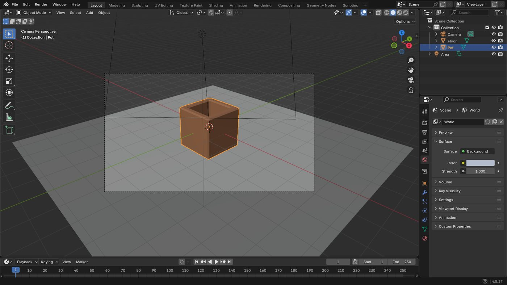
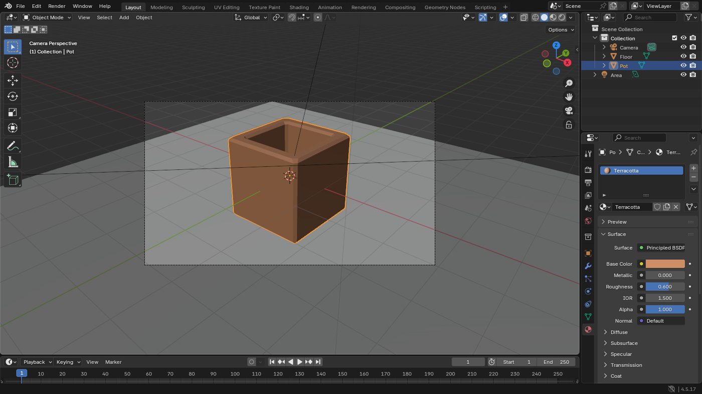

Lesson 5 of 6
Floor, Light and Camera
Set up a scene that is ready to render.
1. A floor
Press Shift + A and choose Mesh > Plane. Scale it up with S, 7, Enter. Move it under the pot with G, Z, -1, Enter. (The pot is 2 tall with its center at zero, so the floor has to sit at -1.)
2. The light
Press Shift + A and choose Light > Area. Move it above the pot, off to one side. An Area light gives a soft shadow. In the Object Data tab (the light bulb icon) raise Power if the image is dark.
You can delete the old Point light by clicking it in the Outliner and pressing X.
3. The background
In the World tab change Color if you want a background other than the default gray.

4. The camera
- Orbit the Viewport to the angle you like.
- Press Ctrl + Alt + Numpad 0 so the camera moves to that angle and you look through it.
- Press Numpad 0 to enter or leave the camera view. The dotted rectangle is the edge of the image that will be rendered.

Exercise
Change the camera angle twice, try another position for the light, and see how it changes the shadow inside the pot.